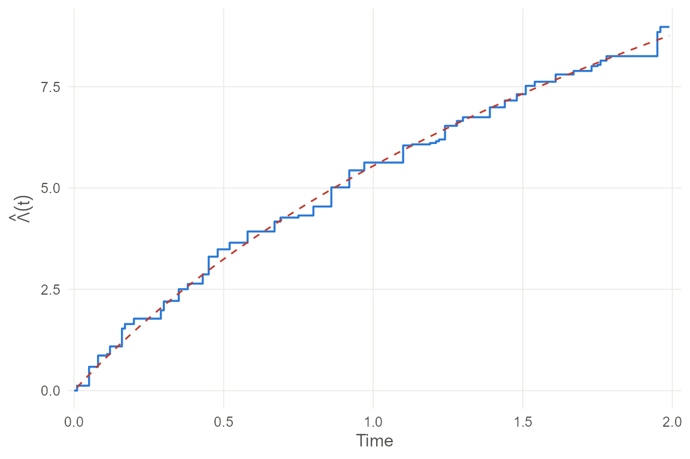

The data and the model
Panel count data arise when a recurrent event process is observed at periodic examinations. Each visit gives the number of events since the previous visit, but not their event times. Examples include hospitalisations counted at quarterly clinic visits, tumours counted at scheduled sacrifices, and insurance claims tallied at renewal.
Write
for the number of events subject
has experienced by time
,
observed at times
,
and
for the count in
.
pcdreg() fits the proportional rate model
where is an unspecified non-decreasing baseline cumulative rate and may vary over time.
The proportional means model is . It requires to be non-decreasing. With covariates that fluctuate over time, this condition is difficult to arrange and interpret: a fitted means model can predict a declining mean count. The rate model requires only to be positive. Predicted means therefore increase automatically, and has the instantaneous relative-risk interpretation of a hazard ratio in survival analysis.
The means model is the established alternative. The package also fits
it with pcdreg(model = "mean"). The last section compares
the models.
Getting data into shape
pcd() constructs the response. It plays the same role as
Surv() in survival analysis and has two forms.
When covariates do not change over time, one row per examination is enough:
visits <- data.frame(
id = c(1, 1, 1, 2, 2),
time = c(0.5, 1.1, 1.9, 0.7, 1.4),
count = c(2, 0, 3, 1, 4),
dose = c(10, 10, 10, 25, 25)
)
pcd(visits$id, visits$time, visits$count)
#> [1] 1: (0.0, 0.5] 2 1: (0.5, 1.1] 0 1: (1.1, 1.9] 3 2: (0.0, 0.7] 1
#> [5] 2: (0.7, 1.4] 4Interval starts are filled in from the previous examination of the same subject, with follow-up beginning at zero.
When covariates do change over time, use the counting
process form: one row per interval with constant covariates. This is the
layout coxph() uses for time-dependent covariates. A
numeric count records an examination at tstop.
An NA count records a covariate change
only.
cp <- data.frame(
id = c(1, 1, 1, 2),
tstart = c(0.0, 0.5, 0.9, 0.0),
tstop = c(0.5, 0.9, 1.2, 0.8),
count = c(2, NA, 0, 3),
dose = c(10, 10, 25, 25)
)
pcd(cp$id, cp$tstart, cp$tstop, cp$count)
#> [1] 1: (0.0, 0.5] 2 1: (0.5, 0.9] - 1: (0.9, 1.2] 0 2: (0.0, 0.8] 3Subject 1 was examined at 0.5 and 1.2, with two events in the first interval and none in the second. The dose changed at 0.9, within the second interval. The rate model uses this information; the means model cannot.
Within a subject the intervals must be contiguous, start at zero, and
end at an examination. pcdreg() checks all of this and says
which subject is at fault when it fails.
Fitting
set.seed(1)
d <- sim_pcd(200, beta = c(1, -1), lambda = function(t) 8 / (1 + t))
fit <- pcdreg(pcd(id, tstart, tstop, count) ~ x1 + x2, data = d)
summary(fit)
#>
#> Call:
#> pcdreg(formula = pcd(id, tstart, tstop, count) ~ x1 + x2, data = d)
#>
#> Proportional rate model for panel count data
#> Standard errors: robust sandwich
#>
#> Estimate Std. Error z value Pr(>|z|)
#> x1 1.10111 0.10693 10.30 <2e-16
#> x2 -1.11478 0.09385 -11.88 <2e-16
#>
#> 200 subjects, 819 examinations, 1601 events, 195 distinct examination times.
#> Log likelihood -1106 in 522 EM iterations.There is no intercept: a constant in
would be indistinguishable from a rescaling of
,
so pcdreg() drops it and reports the baseline
separately.
Fitting maximises the likelihood implied by a nonhomogeneous Poisson process. The EM algorithm treats the unobserved per-time counts as missing data. This makes the integral tractable and requires covariates only at observed examination times, not as complete trajectories.
The Poisson likelihood is a working device, not an assumption about the data. The estimator stays consistent and asymptotically normal when the counts are not Poisson at all.
Which standard errors
This distinction matters for the covariance. Three estimators are available.
se <- function(type) sqrt(diag(vcov(fit, type)))
rbind(robust = se("robust"), information = se("information"))
#> x1 x2
#> robust 0.10693035 0.09384671
#> information 0.07937988 0.08078999"robust", the default, is the sandwich
built from the two matrices
fit$Omega
#> x1 x2
#> x1 -0.60588046 0.06284371
#> x2 0.06284371 -0.67648334
fit$S
#> x1 x2
#> x1 0.8597886 -0.2345604
#> x2 -0.2345604 0.8300369Both matrices are by-products of the last EM iteration, so the robust standard errors are essentially free. The estimator is consistent whether or not the counts are Poisson.
"information" is
.
Under the Poisson assumption,
is the efficient information and this is the right answer. It is also a
cheap stand-in for the profile likelihood method, with which it agrees
closely.
"profile" is the numerical profile likelihood estimator
of Murphy and van der Vaart. It is included for comparison with the
literature and is computed only on request because it is expensive:
pfit <- pcdreg(pcd(id, tstart, tstop, count) ~ x1 + x2, data = d,
profile = TRUE)
rbind(information = sqrt(diag(vcov(pfit, "information"))),
profile = sqrt(diag(vcov(pfit, "profile"))))
#> x1 x2
#> information 0.07937988 0.08078999
#> profile 0.08034997 0.07755357The two estimates track each other closely, as theory predicts,
because both estimate
.
They differ because the profile version uses a numerical derivative with
a step of order
and therefore has a discretisation error that shrinks only with sample
size. Prefer "information" when the Poisson assumption is
tenable. "profile" is mainly provided for comparison with
the literature.
What happens when the Poisson assumption fails
Real recurrent event data are usually overdispersed: some subjects are more event-prone than their covariates suggest. A gamma frailty preserves the rate model but destroys the Poisson structure.
set.seed(2)
od <- sim_pcd(200, beta = c(1, -1), frailty = 1)
odfit <- pcdreg(pcd(id, tstart, tstop, count) ~ x1 + x2, data = od)
rbind(robust = sqrt(diag(vcov(odfit, "robust"))),
information = sqrt(diag(vcov(odfit, "information"))))
#> x1 x2
#> robust 0.26146233 0.28237814
#> information 0.04003442 0.03288915The information-based standard errors are several times too small.
The paper’s simulations put coverage of the resulting nominal 95%
intervals around 15–22%. For this reason, "robust" is the
default and other choices require care.
The baseline and predicted means
baseline() returns the estimated jumps and the
cumulative baseline rate.
head(baseline(fit))
#> # A tibble: 6 × 3
#> time jump cumrate
#> <dbl> <dbl> <dbl>
#> 1 0.01 1.21e- 1 0.121
#> 2 0.02 0 0.121
#> 3 0.03 0 0.121
#> 4 0.04 1.36e-46 0.121
#> 5 0.05 4.66e- 1 0.587
#> 6 0.06 0 0.587
truth <- data.frame(time = fit$baseline$time,
value = 8 * log(1 + fit$baseline$time))
autoplot(fit) +
ggplot2::geom_line(data = truth, colour = "#c0392b", linetype = 2)
The dashed line is the truth, .
Predicted mean counts follow each subject’s covariate trajectory, :
pred <- predict(fit, d, type = "mean")
head(pred)
#> # A tibble: 6 × 3
#> id time mean
#> <chr> <dbl> <dbl>
#> 1 1 0.01 0.155
#> 2 1 0.02 0.155
#> 3 1 0.03 0.155
#> 4 1 0.04 0.155
#> 5 1 0.05 0.755
#> 6 1 0.06 0.755
one <- pred[pred$id == 1, ]
ggplot2::ggplot(one, ggplot2::aes(x = time, y = mean)) +
ggplot2::geom_step(colour = "#2a78d6", linewidth = 0.6) +
ggplot2::labs(x = "Time", y = "Predicted mean count", title = "Subject 1") +
ggplot2::theme_minimal(base_size = 11)The curve is non-decreasing even though x1 changes part
way through follow-up. This is a structural advantage of the rate
model.
Tidy output
tidy(), glance() and augment()
methods are provided for the broom generics.
tidy(fit, conf.int = TRUE)
#> # A tibble: 2 × 7
#> term estimate std.error statistic p.value conf.low conf.high
#> <chr> <dbl> <dbl> <dbl> <dbl> <dbl> <dbl>
#> 1 x1 1.10 0.107 10.3 7.24e-25 0.892 1.31
#> 2 x2 -1.11 0.0938 -11.9 1.53e-32 -1.30 -0.931
glance(fit)
#> # A tibble: 1 × 8
#> model n nexam nevent ngrid logLik iterations converged
#> <chr> <int> <int> <dbl> <int> <dbl> <dbl> <lgl>
#> 1 Proportional rate model … 200 819 1601 195 -1106. 522 TRUEexponentiate = TRUE reports
,
the multiplicative effect on the rate, read as a hazard ratio is
read.
tidy(fit, conf.int = TRUE, exponentiate = TRUE)
#> # A tibble: 2 × 7
#> term estimate std.error statistic p.value conf.low conf.high
#> <chr> <dbl> <dbl> <dbl> <dbl> <dbl> <dbl>
#> 1 x1 3.01 0.107 10.3 7.24e-25 2.44 3.71
#> 2 x2 0.328 0.0938 -11.9 1.53e-32 0.273 0.394augment() attaches the fitted mean to each row, together
with the observed cumulative count and their difference.
.resid is the excess of events seen so far over the number
the model implies, so it is the quantity to plot against time or against
a covariate when checking fit.
aug <- augment(fit)
head(aug[!is.na(aug$.observed),
c("id", "tstop", ".fitted", ".observed", ".resid")])
#> # A tibble: 6 × 5
#> id tstop .fitted .observed .resid
#> <int> <dbl> <dbl> <dbl> <dbl>
#> 1 1 0.38 3.39 1 -2.39
#> 2 1 1.07 7.25 4 -3.25
#> 3 1 1.7 10.2 8 -2.25
#> 4 2 0.21 2.33 2 -0.329
#> 5 2 0.8 5.96 4 -1.96
#> 6 2 1.25 8.57 4 -4.57The means model
pcdreg(model = "mean") fits the other classical model
for these data,
by the estimating equation of Hu, Sun and Wei (2003). It is the comparator in the paper’s application. It is inexpensive because only examination times enter; the grid expansion required by the rate model is unnecessary.
mfit <- pcdreg(pcd(id, tstart, tstop, count) ~ x1 + x2, data = d, model = "mean")
summary(mfit)
#>
#> Call:
#> pcdreg(formula = pcd(id, tstart, tstop, count) ~ x1 + x2, data = d,
#> model = "mean")
#>
#> Proportional means model for panel count data
#> Standard errors: robust sandwich
#>
#> Estimate Std. Error z value Pr(>|z|)
#> x1 0.53845 0.09857 5.463 4.69e-08
#> x2 -1.04802 0.10824 -9.682 < 2e-16
#>
#> 200 subjects, 819 examinations, 1601 events, 195 distinct examination times.
#> Converged in 4 Newton iterations.There is no likelihood behind this estimator, so there is no log
likelihood to report and vcov() offers only the
sandwich.
The two fits require care in interpretation.
cbind(rate = coef(fit), mean = coef(mfit))
#> rate mean
#> x1 1.101105 0.5384467
#> x2 -1.114778 -1.0480179These numbers do not estimate one quantity. With time-varying
covariates, the models are not reparametrisations of each other:
acts on the instantaneous rate in one and the cumulative mean in the
other. They answer different questions and need not agree. These data
were generated from the rate model, so pcdreg() recovers
the simulation values and pcdreg(model = "mean") does
not.
Second, nothing constrains the fitted to increase:
mu <- baseline(mfit)$mean
c(increasing = !is.unsorted(mu), decreases_at = sum(diff(mu) < 0))
#> increasing decreases_at
#> 0 96This is the difficulty that the package’s rate model addresses. It
appears in ordinary simulated data. A declining mean function is not a
numerical failure. It is the estimator’s result when covariate values
move up and down. Predicted means from
pcdreg(model = "mean") can therefore decrease, while those
from pcdreg() cannot.
Computation
The EM algorithm converges linearly and slowly on this problem: plain
EM can still be changing in the fifth decimal place after tens of
thousands of passes. pcdreg() extrapolates the iterations
with the SQUAREM scheme of Varadhan and Roland. An extrapolated point is
kept only if a stabilising EM pass from it does at least as well on the
observed-data log likelihood. The fixed point is unchanged. The required
number of passes typically falls by an order of magnitude.
c(iterations = fit$iterations, EM_passes = fit$passes,
converged = fit$converged)
#> iterations EM_passes converged
#> 522 1567 1Set accelerate = FALSE in pcdreg_control()
to recover plain EM.
The dominant cost is the pooled grid of distinct examination times. The covariate trajectory for every subject is evaluated at every grid time within follow-up. Tied examination times across subjects, as with scheduled visits, keep the grid small.
References
Sun, D., Guo, Y., Li, Y., Tu, W. and Sun, J. (2024). A robust approach for regression analysis of panel count data. Bernoulli 30(4), 3251–3275. doi:10.3150/23-BEJ1713
Hu, X. J., Sun, J. and Wei, L. J. (2003). Regression parameter estimation from panel counts. Scandinavian Journal of Statistics 30(1), 25–43. doi:10.1111/1467-9469.00316
Varadhan, R. and Roland, C. (2008). Simple and globally convergent methods for accelerating the convergence of any EM algorithm. Scandinavian Journal of Statistics 35, 335–353.